|
Selim Koca
Plasmot Ltd. Þti.
Eylül 2008, Bursa
Özet
Bu çalýþmada; kalýpçýlýk sektöründe oldukça geniþ bir uygulama alaný bulan küresel takýmlarda efektif kesme hýzý, bir baþka ifadeyle gerçek kesme hýzý (True Cutting Speed- TCS) konusu ele alýnmýþtýr. Bu konuya baðlý olarak frezeleme esnasýnda iþleme yönünün, ölçü ve yüzey hassasiyeti üzerine etkileri incelenmiþ ve bir sonuca varýlmýþtýr. Efektif kesme hýzýný etkileyen en önemli faktör olan "True Cutting Diameter-TCD" parametresinin açýklanmasýnda görsel unsurlar kullanýlmýþ ve bu iþlemler CATIA-V5 yazýlýmý kullanýlarak gerçekleþtirilmiþtir.
1. Giriþ
Küresel takýmlar, 3D yüzeylerin iþlendiði kalýpçýlýk sektörü gibi alanlarda oldukça kullanýþlý takýmlardýr. Birçok yeni geometri ve ölçüye sahip takýmlar günümüzde yaygýn bir kullaným alanýna sahiptir. Takým kaplama teknolojisindeki geliþmeler ve sertleþtirilmiþ çeliklerin doðrudan frezelenmesinin mümkün olmasý küresel takýmlarýn önemini arttýrmaktadýr [1].
Frezeleme esnasýnda yüzeyler 2 metot kullanýlarak oluþturulur. Bunlar; Up Milling (UM) - konvansiyonel ya da ters yönlü iþleme- ve Down Milling (DM) - ayný yönlü iþleme- yöntemleridir [2, 3]. Bu yöntemlerin; kesme kuvvetinden ölçü-yüzey hassasiyetine ve hatta takým ömrüne kadar birçok parametreyi etkilediði bilinmektedir.
2. Efektif kesme hýzý
2.1. Efektif kesme hýzýnýn tanýmý
"Efektif" sözcüðünün bir çok anlamý olmasýna raðmen kelime manasý olarak geçerli, gerçek anlamlarýna gelen bir kelimedir. Efektif kesme hýzý; özellikle ball nose-tam küre- solid karbür ya da takma uçlu frezelerin talaþ kaldýrma esnasýnda; talaþ derinliðine baðlý olarak lineer olmayan bir þekilde artan ya da azalan gerçek kesme hýzýdýr.
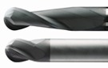
Resim 1. SECO JABRO Tornado Ball Nose solid karbür parmak frezeler [4]
Aþaðýda, diðer küresel uçlu parmak freze örnekleri gösterilmiþtir;
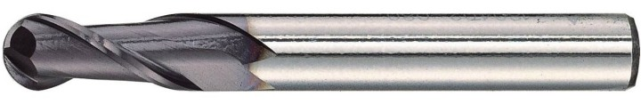
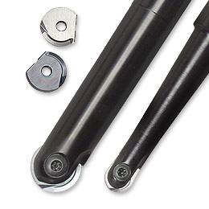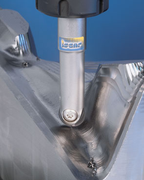
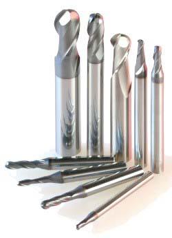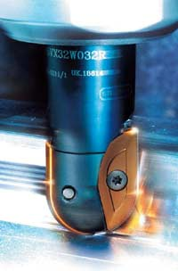
2.2. Efektif kesme hýzýnýn formülasyonu
Küresel takýmlarla frezeleme esnasýnda þayet talaþ derinliði takým radyüsünden küçükse efektif çap aþaðýdaki formülle hesaplanýr [5].
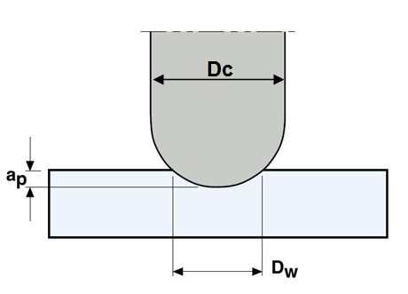
Resim 2. Efektif çapýn þematik gösterimi [4]
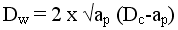 (1)
Yukarýdaki formülde;
Dw = Efektif çap (mm)
ap = Talaþ derinliði (mm)
Dc = Takým çapý (mm) ifade etmektedir.
Bu formülden hareketle efektif kesme hýzý;
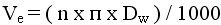 (2)
þeklinde ifade edilebilir.
Burada;
Ve = Efektif kesme hýzýný (m/dak)
n = Devir sayýsýný (dev/dak)
ifade etmektedir [4].
Kesme düzleminin takým eksenine dik olduðu durumlarda yukarýdaki formüller geçerli olmakla beraber, takým ekseni iþlenen yüzeye dik deðilse yukarýdaki formüller geçerliliðini kaybetmektedir. Özellikle 3D yüzeylerin küresel takýmlarla iþlenmesinde iþlemler daha karmaþýk bir hale gelmektedir. Takýmýn yüzeyle olan temas açýsý deðiþmektedir.
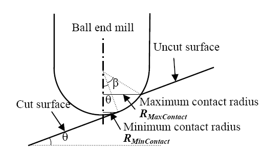
Resim 3. Eðimli yüzeylerde takým-iþ parçasý iliþkisi [6]
Inconel 718 süper alaþým malzemesi için; 5000 dev/dak devir sayýsý, 0.1 mm talaþ derinliði ve 80 lik eðim açýsý altýnda 10 mm çapýnda küresel takýmýn minimum ve maksimum temas radyüsündeki kesme hýzýnýn 22 m/dak - 52 m/dak arasýnda deðiþtiði bulunmuþtur [6]. Buradan da anlaþýlacaðý üzere eðimli yüzeylerin iþlenmesinde takým temas yüzeyi farklýlýk gösterdiðinden ötürü kesme hýzý deðerleri de deðiþkenlik göstermektedir.
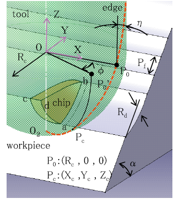
Resim 4. Eðimli yüzeylerin küresel takýmlarla iþlenmesinde kesme mekanizmasý [1]
Hiroyasu ve ekibi yapmýþ olduklarý çalýþma neticesinde; eðimli yüzeylerdeki kesme kuvvetinin ve kesme hýzýnýn takým helis açýsýna da baðlý olduðunu keþfetmiþlerdir.
|